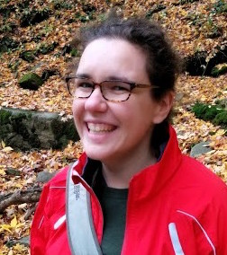
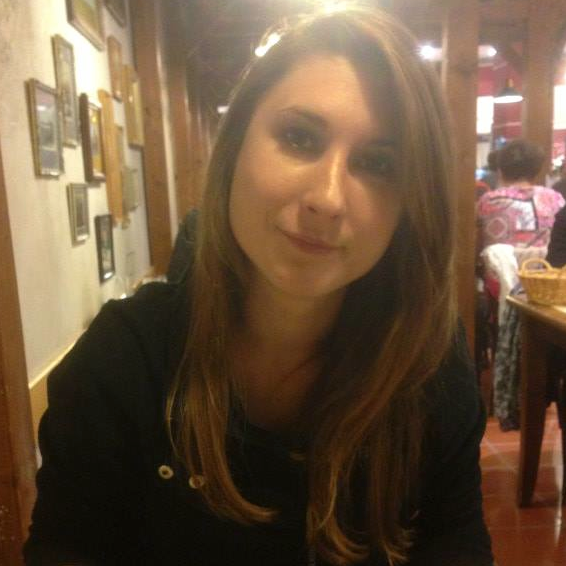
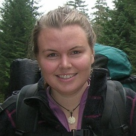
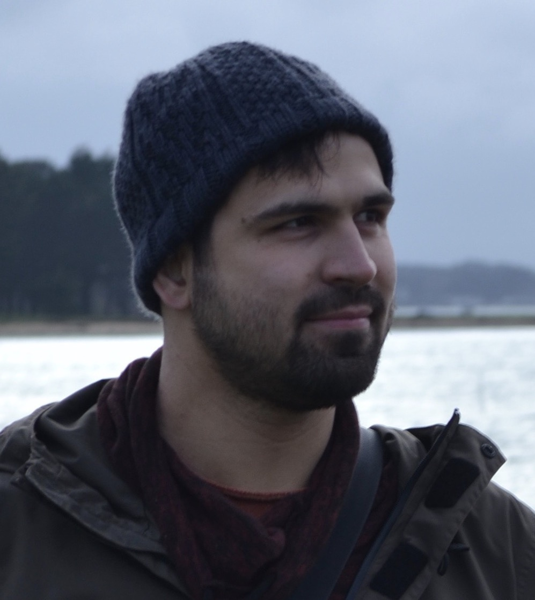
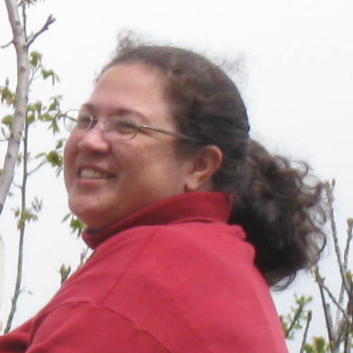

Current R-I Lab members
Please read more information on joining the lab
Luis Avila 
Luis is a postdoctoral scholar working on extant and historical recombination rate variation in maize landraces and teosinte.
Kevin Boardman
Kevin is an undergraduate student currently working on a PUF-funded independent project to use mutation lines to study root nodulation genes and mycorhhizal symbiosis in maize.

Dan Gates 


Dan is a postdoctoral scholar who studies adaptive introgression and local adaptation in maize landraces as part of the HiLo project.
Caryn Johansen 
Caryn is a graduate student in the Plant Biology Graduate Group, coadvised by Dan Runcie. Caryn is interested in local adaptation in maize, and modeling the genetic architecture underlying quantitative traits.

Emily Josephs 


Emily is an NSF plant genome postdoc working on adaptation to domestication in collaboration with Graham Coop and Julin Maloof.
Tanmayee Khadilkar
May is an undergraduate student working on variation in copy number and location of the Hopscotch retrotransposon in the maize genome.

Anne Lorant
Anne has worked as the lab manager since 2012. In addition to running the show, she works the magic to get us from seed to .bam. Anne is concurrently doing a PhD in teosinte evolutionary genetics with Maud Tenaillon.

Wenbin Mei 
Wenbin is a postdoctoral scholar who works on the population genetics of copy number variants and inversions in both maize and teosinte. Wenbin is also part of the maize diversity project.
Anna O’Brien 
Anna is a graduate student in Population Biology, coadvised by Sharon Strauss. Anna works on the coevolution of teosinte and mycorrhizae along elevational gradients in Mexico.

Ellen Osborn
Ellen is an undergraduate researcher majoring in Global Disease Biology. She is working in the lab on the population genetics of transposable elements in maize and teosinte.
Jeff is a Professor in the Department of Plant Sciences and a faculty member of the Center for Population Biology and the Genome Center. He started at UC Davis in 2009.

Michelle Stitzer 
Michelle is a graduate student in Population Biology, working on the population genetics of transposable elements in maize and teosinte as part of the maize diversity project.

Markus Stetter 

Markus is postdoctoral scholar working on domestication and adaptation in polygenic traits in modern and ancient maize.

Dianne Velasco 
Dianne is a graduate student in Integrated Genetics and Genomics. She studies domestication and evolution of peaches, almonds, and their relatives in the genus Prunus.
Jinliang is a postdoctoral scholar working on the quantitative genetics of heterosis and population epigenetics in teosinte maize diversity project
Lab Alumni
- Josh Hough: Postdoc 2016-2017
- Paul Bilinski: PhD Student 2010-2016 (Postdoc, Max Planck Institute for Developmental Biology, Tübingen)
- Simon Renny-Byfield: Postdoc 2014-2016 (Research Scientist, Dupont Pioneer)
- Kate Crosby: Postdoc 2014-2015 (Research Scientist, Monsanto)
- Sayuri Tsukahara: Postdoc 2013-2015
- Tim Beissinger: Postdoc 2014-2015 (Research Geneticist, USDA-ARS U. Missouri)
- Arun Durvasula: Undergraduate 2013-2015 (PhD Student, UCLA)
- Nivaz Brar: Undergraduate 2014-2015
- Tyler Kent: Undergraduate 2013-2015 (PhD Student, U. Toronto)
- Vince Buffalo: Computational Biologist 2013-2014 (PhD Student, UC Davis)
- Sofiane Mezmouk: Postdoc 2012-2014 (Research Scientist, KWS)
- Shohei Takuno: Postdoc 2012-2013 (Asst. Professor, SOKENDAI)
- Matthew Hufford: Postdoc 2010-2013 (Asst. Professor, Iowa State)
- Tanja Pyhäjärvi: Postdoc 2010-2012 (Sr. Research Fellow, U. Oulu)
- Joost van Heerwaarden: Postdoc 2009-2011 (Research Coordinator, N2Africa)
Visiting Scholar: for >100 hours of scholastic visitation
Fellow of the R-I Lab: for >500 hours of scholastic fellowship
Current Collaborators
Biology of rare alleles in maize and teosinte
- Ed Buckler
- Peter Bradbury
- John Doebley
- Sherry Flint-Garcia
- Jim Holland
- Matthew Hufford
- Qi Sun
- Doreen Ware
Evolutionary genetics of highland adaptation in maize
- Tim Beissinger
- Graham Coop
- Sherry Flint-Garcia
- Matthew Hufford
- Ruben Rellan-Alvarez
- Dan Runcie
- Ruairidh Sawers
Genetic assimilation in teosinte
Teosinte-mycorrhiza coevolution